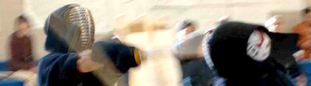

|
|||
|  | |||
| Practice Info Events Members News Photos Links | |||
Welcome to Shufukai
Boston Shufukai Kendo was founded in 1997 by people who love Kendo. Since its founding Shufukai has promoted Kendo in the greater Boston area.
Shufukai was named after the historical "Shunpukan" Dojo established by Tesshu Yamaoka at the end of Edo period. We used the Chinese character "Shu" which means excellence, instead of using "Shun" which means spring, to add our own uniqueness to the name, as represented in the logo.
Shufukai is a member of the All United States Kendo Federation (AUSKF) and All Eastern United States Kendo Federation(AEUSKF).
We welcome anyone who is interested in practicing Kendo. Please contact us if you plan to visit.
What is Kendo?
Kendo or "Way of the Sword" is the martial art of Japanese fencing. Kendo is a physically and mentally challenging activity that combines strong martial arts values with sporting-like physical elements.
Contact
If you're interested in joining Shufukai's practice, please send us email.
Shufukai Facebook
Please join us on Facebook for more up-to-date news and schedule information.
Copyright © 2007-2013 Boston Shufukai Kendo. All rights reserved. |